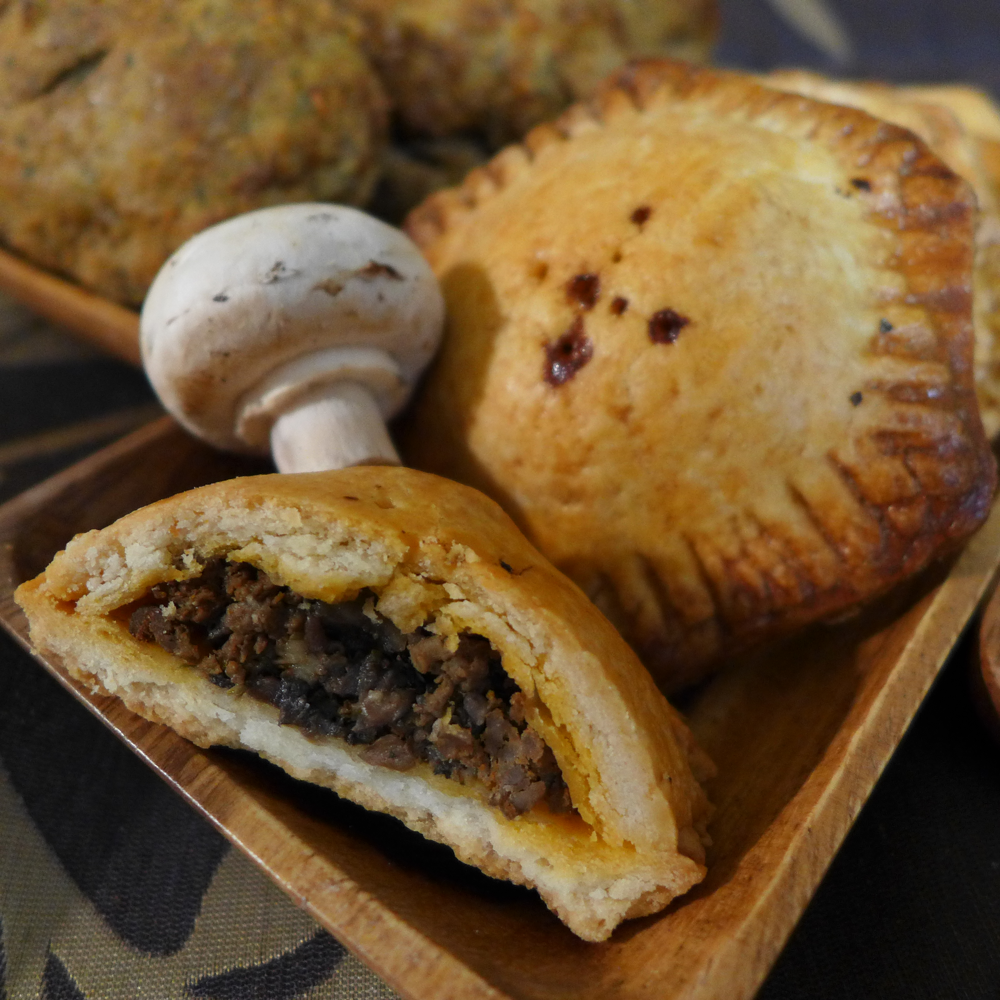

Back to Home

It's well known Hobbits love mushrooms. These hearty hand pies are an inexpensive and
durable way to bring the best taste of the Shire along on any adventure. Enjoy a couple for a quick Elevenses or save them for supper
when the crust can soak up a little mutton gravy. While Hobbits are well known for enjoying meat as much as they
do mushrooms, it's easy enough to make these vegan in case you're serving visitors on their own adventure from distant lands.
1 tbsp butter, bacon grease, or cooking oil
1 large yellow onion, diced
1 pint / 450 g mushrooms, minced
6 garlic cloves, minced
1 1/2 tsp salt
1 tsp ground black pepper
3 1/2 tsp paprika
1/3 tsp fennel seed
1 tsp savory (or rubbed sage)
1 tsp rosemary
1 lb / 450 g ground beef, pork, mutton or a mix (or vegan crumbles)
1 batch short crust pastry dough
- To make the filling, melt your fat of choice in a large skillet over medium-high heat. Add the diced onions
and let them cook for about 5 minutes. You want to sweat out a lot of the moisture.
- Add the mushrooms and garlic, then cook them for another 3-4 minutes, stirring often.
- Toss in the salt, pepper, paprika, fennel, savory, and rosemary. Give it all a good hearty stir and cook for
another 2 minutes.
- If you're making vegan pies, you can either stop now for an all vegetable filling or add a pound of frozen
vegan crumbles and another tbsp of cooking oil. The crumbles are fully cooked, so you're literally just
warming them though and mixing them with the spices.
- If you're making the meaty version, slide the mushroom mix out of the pan and let it patiently wait its turn
in a nearby bowl. Replace it with the ground meat, which you should cook until browned through.
- You may want to drain the fat, but don’t. That precious fluid not only helps bind your ingredients together,
but also helps preserve the food.
- Dump the cooked mushroom mix back in the pan and give it a good stir until everything is well blended. Now
turn off the heat and let the filling cool slightly. If you don’t already have a disc of dough in the
fridge, this is a good time to make the crust.
- Lightly flour your work surface. Break off about ¼ of the short crust pastry dough and roll it out until
it’s no less than ¼-⅛ inch / 3-6 mm thick. You really don’t want it any thinner. Remember, these aren’t
delicate aristocratic nibbles. These are hearty hand pies meant to survive two days in your knapsack. Give
them some backbone.
- Use a four inch / 10 cm wide cookie cutter to cut out dough discs. Circles, hexes, or whatever shape you’d
like are perfectly fine, so long as you are confident you can seal it closed.
- Densely pack about 2 tbsp of filling in the middle of your bottom crust. Go ahead and use your hands. It’s
easier. Tightly stretch a second crust on top of it. Use the edge of a fork to crimp the crusts closed. (Or
be fancy with your favorite technique. Have fun with it.) Make sure to punch a couple holes in the top for
steam to escape.
- Arrange your hand pies 1-2 inches / 2.5 -5 cm apart on a well greased cookie sheet.
- If you're not making vegan pies, whisk 1 egg plus 1 tbsp of water together. Use a pastry brush to paint the
tops of your hand pies. If you are using the vegan option, paint the top of the crusts with a thin layer of
very cold water or a dab of melted coconut oil to give them a little sheen.
- Either way, bake them at 375F / 190C for 20-25 minutes, or until golden brown. Try not to eat the entire
batch fresh from the oven. You need to save at least a few for adventuring.